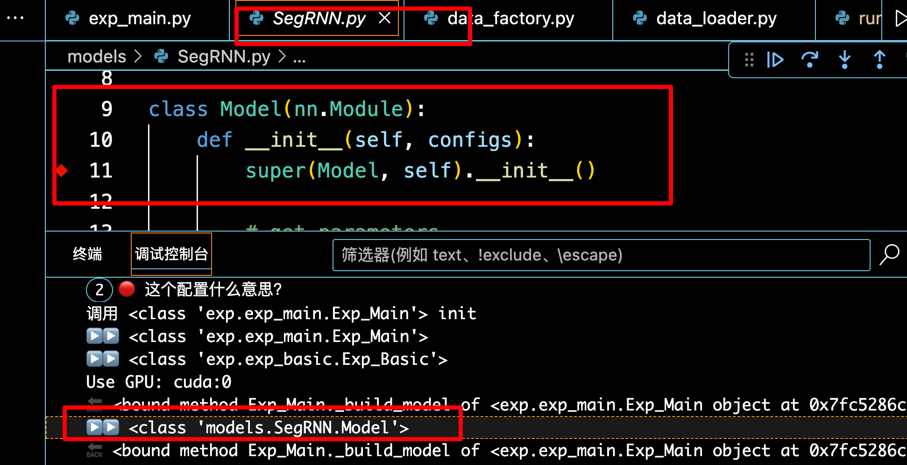

复现SegRNN¶
项目复述逐字稿，留着讲组会用
Hello 大家好，今天我给大家讲 SegRNN 的论文以及对应的代码，我这次有好好的准备，大家可以好好听，然后我们可以随时讨论哈哈哈；
首先，我们从 github 上克隆下来的项目到了本地，首先按照作者的 readme 一步步配置虚拟环境按照 requirements 安装库，运行。以我拿到的这个 SegRNN 项目为例，看到的是 Shell 脚本调用的 python，我看过的很多深度学习的项目都是用的 args 也就是命令行参数来给 python 传相应的参数，而是用的 shell 脚本，可以把 要通过命令行传给 python 的参数，可以直接在脚本中定义好，通过脚本传。
那这个时候，怎么调试 python 呢？
我们来看到这个 shell 脚本调用 python 的方法
一般 shell 脚本是存储在 scripts 文件夹下的，以 .sh 结尾的文件。好来看到这个 shell 脚本调用 python 的命名是 python -u run_longExp.py ，-u 表示直接修改python 文件传入参数的意思，这里我想说一下，我所讲的内容，都是我根据自己调试这个项目以及遇到的内容学习到的，所以讲的不对的地方一定要告诉我，我们一起讨论。
好，回到正题，现在我们就要修改 shell 调用 python 文件的方法，具体来说就是改成：python -m debugpy --listen 5998 --wait-for-client run_longExp.py

现在我来一个个解释这行命令的意思：
-m debugpy 的意思就是调用 debugpy ，就是调用 python 调试程序，对 python 进行调试，注意 debugpy 是 python 的一个库，所以我们在使用这个的命令的时候，首先就是 pip install debugpy
-listen 5998 的意思的监听 5998 端口，也就是把 python 的调试程序连接到 5998 端口，然后调试，当然你设置成别的也就是可以的，
那我们怎么选择端口呢？
在命令行终端，运行以下代码，查看设备的空闲端口，然后你随便选一个，在 python 调试的launch.json的文件中修改
1 2 3 | |
那怎么找到 python 调试文件的 配置文件呢？
在VSCode按Command+Shift+P, 输入Debug: Add Configuration 即可打开 launch.json，当然了你也可以在 vscode 旁边的小虫子，点 新建 launch.json
找到以后，添加以下配置，注意是在 configration 的关键字下修改。
1 2 3 4 5 6 7 8 9 10 11 12 13 14 | |
这是我的 launch.json文件的完整样子：
1 2 3 4 5 6 7 8 9 10 11 12 13 14 15 16 17 18 19 20 21 22 23 24 25 26 27 28 29 30 31 32 33 34 35 36 37 38 39 40 41 42 43 44 45 46 47 48 | |
想说明的是，我这里还配置了，脚本的调试，分别是：
"Bash-Debug (type in script name)" 表示通过输入脚本名称启动调试
"Bash-Debug (select script from list of sh files)", 通过脚本列表选择调试文件，等等，就不说了，因为我也不是特别明白，这里的配置主要是对 shell 脚本的调试，配置了这个，那么 shell 脚本也就可以调试了。
好了，现在关于 --listen 参数讲完了，讲下一个参数 --wait-for-client
这个的意思是说，我们在启动脚本的时候，要等待连接调试程序，才能正常调试，意思就是 运行脚本以后，点一下左边的小虫子，选择 我们配置的 调试器，就是我们设置的 name，就选我们有监听窗口的那个。
这样我们在 调用的python run_longExp.py 上，打断点并运行脚本，就可以调试了。
哦，对了，怎么运行脚本文件
在 vscode 的命令行就可以直接运行两种方法，一个是 ./你想运行的脚本文件的路径，还有就是 sh 你想运行的脚本文件的路径，这两种方法，有点区别，但我还没有可以的区分。哦，对了，如果有的时候，可能需要先添加权限，才能正常的运行 shell 脚本，具体就是在运行脚本前执行 chang mode 添加 执行权限，具体的命令就是命令行直接输入： chmod +x 脚本文件名称
以上是第一部分的讲解：shell 调用的python，我们怎么进行调试。
现在我们终于可以调试 我们的项目了。开始。
首先**第一个断点**，打到调用的 python 文件的开始，

我把这个 run_longExp文件，叫做**项目主文件**，主要包括的模型的迭代训练，整个项目的 python 参数设置，而等一下我们 会看到这个 run_longExp.py 会频繁调用 exp_main.py，我把它 叫 模型主文件，主要包含的东西就是，运行一次模型我们需要加载的训练集、验证集和测试集。
然后应该打的断点就是 初始化init 处，和训练 forward 处、或者 train 处、或者调用的 model(x)处。
初始化 init 处，可以让我们知道 文件之间的调用关系，因为越好的项目封装的越好，但是也越抽象，需要不断的捋明白类之间的调用关系，而类又封装到一个个 python 文件中。
forward 的地方，能让我们看到 数据流动以及变化，这是最重要的部分了。
还有一些你不明白的地方或者什么的，想打断点就打断点。好了，这是我想说的打断点的一下经验。
下面继续开始我的断点 ，我的第二个断点在：
1 | |
这个断点是我想打 init 断点 exp = Exp(args) 和 forward 断点 exp.train(setting) 时，遇到第一个比较不明白的地方，我不明白，因为我第一次看到这么做的。
这里的逻辑是什么呢？
这里其实是类的重命名，也是 Exp_Main 本身就是一个类，但是在项目主文件用这个类的时候，重命名了一下，后面在项目主文件用的时候，用的都是这一个重命名的类，然后用这个重命名的类，进行的实例化。
我现在想说一下，这个Exp_Main，是从哪里来的： from exp.exp_main import Exp_Main，是这句话。也就是 这个类 在 exp 文件夹下 exp_main.py 的 Exp_Main 类。记住这个模型主文件 exp_main.py，因为经常用。
然后没什么想说的了，进入下一个部分，类的 初始化 exp = Exp(args)
哦，对，你看我这儿，我还在 setting 这打了一个记录点，就是我不明白的地方

断点的类型还是挺多的，直接断点、记录点，条件断点，命中次数断点。记录点不停，就是打印信息。我有些断点之前不明白就是普通断点，明白了就变成了记录点，不想停了但是做个标记，然后不明白的地方也标记一下，也弄成记录点。后面再看。
好，继续回到，exp = Exp(args) # set experiments
点，步进。
步进就是一步步执行，会进入到函数内部，逐过程就是逐步执行，不会进入调用的函数，然后还有继续执行，就是一直执行，直到遇到 下一个断点。

因为我已经实现标了一个记录点，然后步进 执行到这句，也触发了记录点。打印了信息。花括号包裹的部分，会自动替换成 python 程序的变量，输出到调试控制台。
想说明的就是，这里能停止，是因为步进到了这里，并不是因为打了记录点。
说完了。然后继续回到 项目的执行。
这里我们可以看到进入了 Exp_Main的 init 部分，我记这个就是打印一下路径，因为最开始看的时候，太乱了，各种调用，头都晕了。
这里就是说，我们从 项目主文件 run long exp.py，进入了 模型主文件 exp_main.py 模型的的init 和 train训练过程 都在这里了。
输出的意思就是说，我们现在到了 exp 文件夹下，exp_main.py的 Exp_Main类 的 init 方法。
这里有想说的地方，是因为python的继承的，你看这个 class Exp_Main 是继承的父类
关于 python 的继承和多态想说明的是：
我现在把类的重命名是理解为 多态，有理解更好的欢迎找我讨论，而类的继承一般就是 类的名称小括号里的东西 class Exp_Main(Exp_Basic):，或者你看类 init 方法下面的第一句 super 什么什么的super(Exp_Main, self).__init__(args)
然后，对于深度学习来说，一般是继承自 nn.Module的，而这里继承的是 Exp_Basic ，也就是也是一个自定义函数，那，话不多说，
步进，看看它到底是什么东西，诶，然后我们就看到了，Exp_Main有的，Exp_Basic都有，方法都是一样的，但是 Exp_Main 更全，相当于 Exp_Basic是一个模版

现在我们步进到了继承的父类文件，开始逐步执行这里，一步步的

到这里，想说的是，涉及到了 方法的重写，也就是 子类和父类中都有 这个 self._build_model()，但是 很明显父类中什么也没有，但是子类更全，方法重写是，先看子类的，子类没有重写，就执行父类，所以当逐步执行的时候，下一步，我们又返回到了 模型主文件的 ._build_model()，方法。
既然回到了 模型主文件的 build_model 方法，那就看，首先定义了一个字典，通过字符串 所以到对应的类，因为索引到了类，我们才能继续操作呀，比如实例化，forward。
然后就到了 model 的定义
model = model_dict[self.args.model].Model(self.args).float()
通过 self.args.model 参数去字典中 model_dict 中索引到类，然后调用这个类的额 .Model() 方法，float 不说了，就是转换数据类型
这里传入的参数，也就是 self.args.model=SegRNN，是个字符串，通过字典索引到了类，并且是自定义的类，并且，类是先 init 初始化，然后 forward 传入数据，进行数据的流动，所以这句应该是也是到了某个 init 中，那话不多说，步进，如我们所料，就是到了 SegRNN.py Model方法中的 init，

嗯，因为我之前也打了一个记录点，所以调试控制台有输出。现在我们现在的位置，models 文件下下，SegRNN.py 的 Model 类中，并且调用的是 init 方法。
